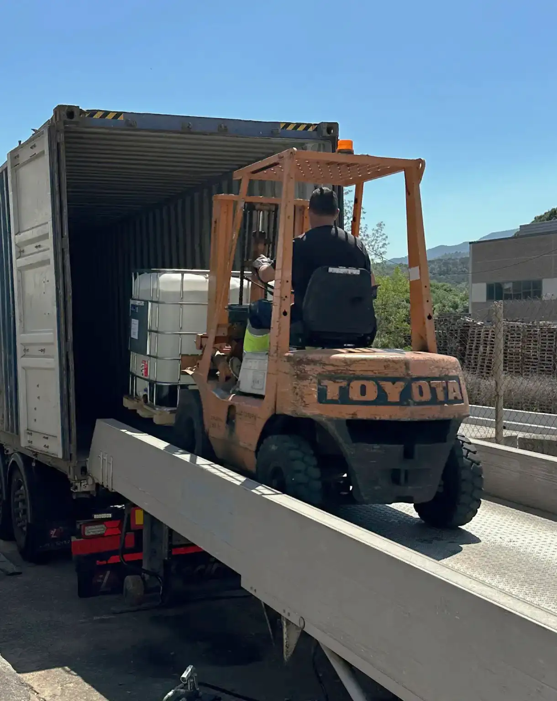
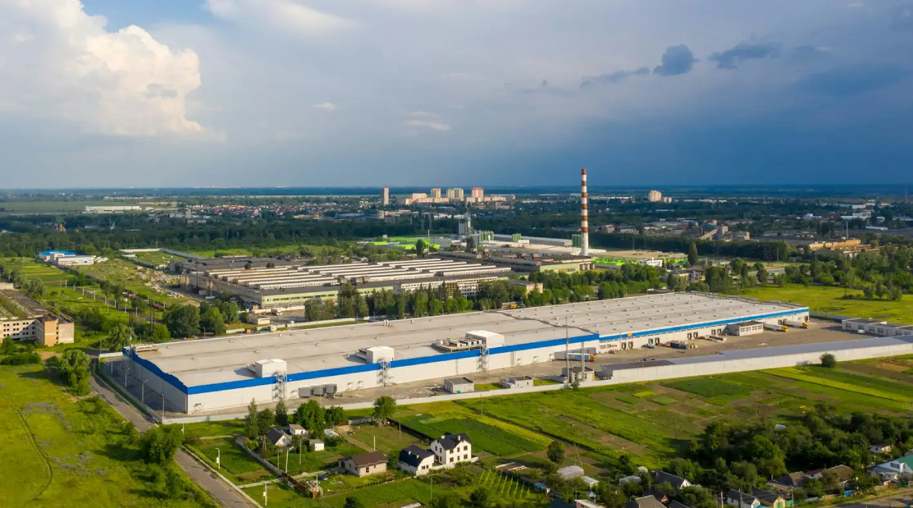
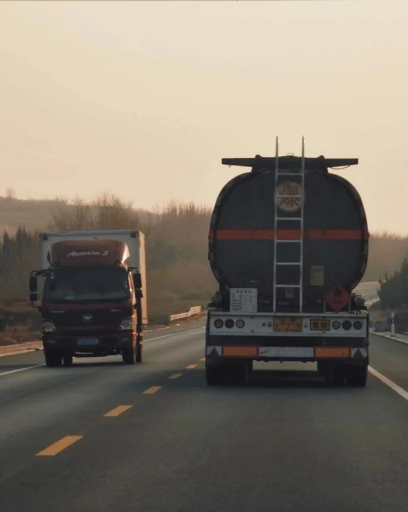
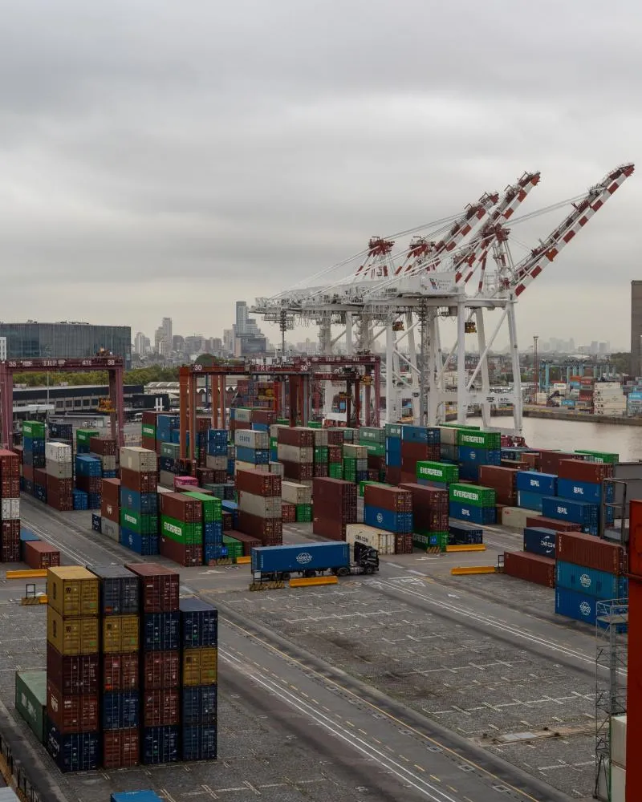
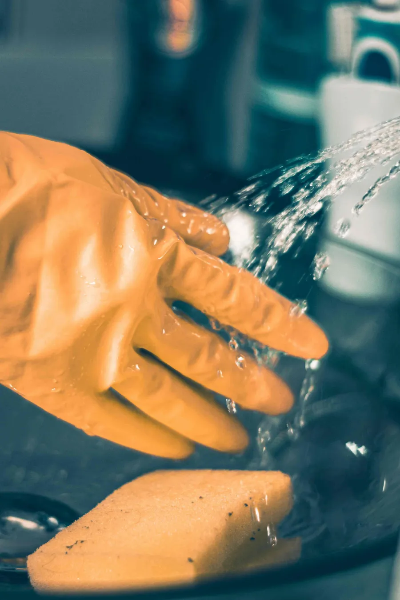

Industria Química
Gestión y recuperación de productos químicos, desde la valoración y retirada hasta su almacenamiento y redistribución.
Saber más →
En Salvadis colaboramos con empresas de distintos sectores industriales, ofreciendo soluciones seguras y eficientes para la gestión de productos químicos y mercancías industriales.
Nuestra experiencia abarca sectores como la industria química, alimentación (FOOD & FEED),
detergencia, agroquímica, logística, compañías de seguros y abandonos
aduaneros.
Adaptamos nuestra forma de trabajar, la trazabilidad y la documentación a las
características de cada actividad, ofreciendo una gestión ágil, segura y adaptada a cada
operación.

Gestión y recuperación de productos químicos, desde la valoración y retirada hasta su almacenamiento y redistribución.
Saber más →
Apoyo a operadores logísticos en la recuperación, gestión y redistribución de mercancías afectadas o siniestradas.
Saber más →Gestión de productos procedentes de los sectores Food, Feed y Farmacia, buscando alternativas de valorización y salidas técnicas.
Saber más →
Gestión de mercancías siniestradas o abandonadas, buscando la mejor alternativa para su recuperación, salida o destino final.
Saber más →
Soluciones para fabricantes y distribuidores en la gestión de excedentes, productos no conformes y mercancías afectadas.
Saber más →Apoyo en la valoración y gestión de mercancías dañadas, facilitando una respuesta ágil y coordinada ante cada siniestro.
Saber más →En Salvadis gestionamos productos químicos siniestrados, rechazados, obsoletos o excedentes, buscando
la mejor solución para cada mercancía.
Coordinamos su retirada, valoración, clasificación, almacenamiento y posterior salida o
redistribución a través de nuestra red de colaboradores especializados.
Nuestra experiencia en el sector químico nos permite actuar con rapidez ante situaciones
críticas, reduciendo riesgos y facilitando una gestión eficaz de cada producto.
Apoyamos a operadores logísticos y empresas de transporte en la gestión de mercancías afectadas por
derrames, rechazos de carga, accidentes u otras incidencias.
Nos encargamos de coordinar la recogida, clasificación y almacenamiento temporal del
material, adaptando cada operación a las características de la mercancía.
El objetivo es resolver la incidencia con rapidez, reducir tiempos de espera y facilitar la
recuperación o salida del producto.
Trabajamos con productos procedentes de sectores Food, Feed, Farmacia y Agroquímica que, por
excedentes, cambios de especificación o incidencias, ya no pueden seguir su vía comercial habitual.
Analizamos cada mercancía para encontrar alternativas de recuperación, valorización,
redistribución o salida técnica, buscando conservar su valor y favorecer soluciones de economía
circular.
Ayudamos a gestionar mercancías siniestradas, inmovilizadas o abandonadas en procesos aduaneros,
buscando la alternativa más adecuada para cada caso.
Analizamos el estado y las posibilidades de cada mercancía y coordinamos las actuaciones
necesarias para facilitar su recuperación, regularización, redistribución o salida.
Trabajamos de forma coordinada con los distintos profesionales implicados para agilizar cada
operación y mantener una comunicación clara durante todo el proceso.
Colaboramos con fabricantes y distribuidores en la gestión de excedentes, productos fuera de
especificación, obsoletos o afectados por incidencias.
Nuestra prioridad es ofrecer una gestión rápida, segura y trazable, buscando alternativas de
recuperación, valorización, redistribución o salidas técnicas dentro de un modelo de economía
circular.
Colaboramos con compañías aseguradoras, peritos y gabinetes de valoración en la gestión de mercancías
dañadas tras un siniestro.
Apoyamos el proceso desde la valoración inicial y recuperación del producto hasta su
almacenamiento, redistribución o destino final.
Coordinamos las distintas actuaciones necesarias y mantenemos una comunicación fluida con
las partes implicadas para facilitar una resolución ágil y transparente.
Nuestra metodología se ajusta a las exigencias de cada industria para ofrecer una respuesta precisa y efectiva.
En Salvadis analizamos cada caso de forma personalizada. Cuéntanos tu situación y diseñaremos una solución adaptada a tus necesidades.
Contacta con nosotros arrow_outward